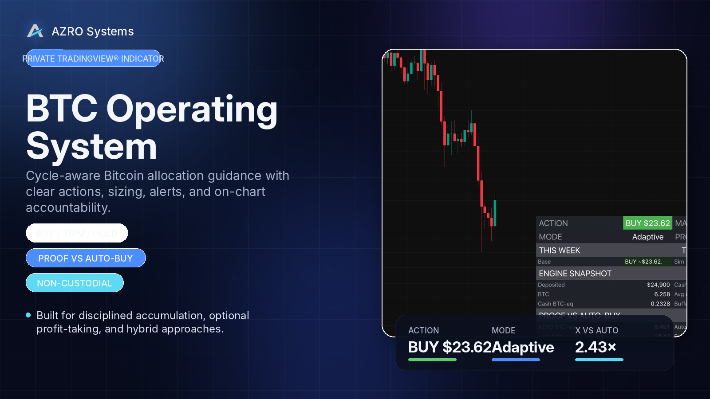

Two systems. One rules-first mindset.
AZRO Systems builds proof-first TradingView workflows that reduce noise, support a written plan, and keep weekly decisions calm enough to follow.
A cycle-aware Bitcoin allocation process.
A cycle-aware Bitcoin allocation framework engineered as a fault-tolerant policy stack — with clear actions, sizing, alerts, and on-chart accountability.
- Clear output: BUY / TRIM (optional) / HOLD + amount
- Multiple policies and risk profiles for different operator styles
- Invite-only access on TradingView with no exchange connection

BTC Operating System glossary
What the dashboard means, and how it fits into a repeatable Bitcoin allocation process.
Action + suggested amount
Use this as the anchor for the week. The goal is to remove negotiation when volatility spikes and make the process easier to follow.
Market context
Context tells you whether conditions look calmer, richer, or riskier without pretending to predict every move.
Modes + risk profiles
Stack, Adaptive, Event, and Performance handle optional trims differently. Conservative, Balanced, and Aggressive shape pacing and buffer behavior.
Proof vs auto-buy
These proof metrics compare the workflow to a simple auto-buy baseline so you can audit whether the process is actually adding value over time.
Alerts (optional)
Alerts support the routine. They surface attention only when it matters instead of turning the workflow into noise.
Cycle confirmation labels for XRP.
A proof-first weekly workflow built around readable confirmations, optional context, and alert-ready structure.
- MAJOR / RADAR / LIGHT / EARLY label workflow
- Optional context overlays and risk markers
- Built for disciplined weekly-close decision-making

Label glossary (XRP)
What each label means, and how it fits into a weekly-close workflow.
MAJOR TOP / MAJOR BOTTOM
These are the clearest cycle confirmation labels in the system. They are designed to slow you down and frame the biggest decisions, not create noise.
RADAR TOP / RADAR BOTTOM
RADAR labels help you frame important swings earlier without pretending to replace the higher-confidence MAJOR labels.
LIGHT TOP / LIGHT BOTTOM
LIGHT labels are designed to surface context and attention without overwhelming the chart or forcing constant activity.
EARLY TOP / EARLY BOTTOM
EARLY labels are lower-confidence cues. They help you stay aware, but they are not the weekly-close confirmation you should structure the workflow around.
Risk triangles + context overlays
Risk triangles, EMA Cloud, RSI zones, MACD, and ROI pop-ups provide additional context. They do not replace the confirmation labels.
Walkthroughs
Start with the workflow that matches your market, then open the docs when you want the deeper detail.